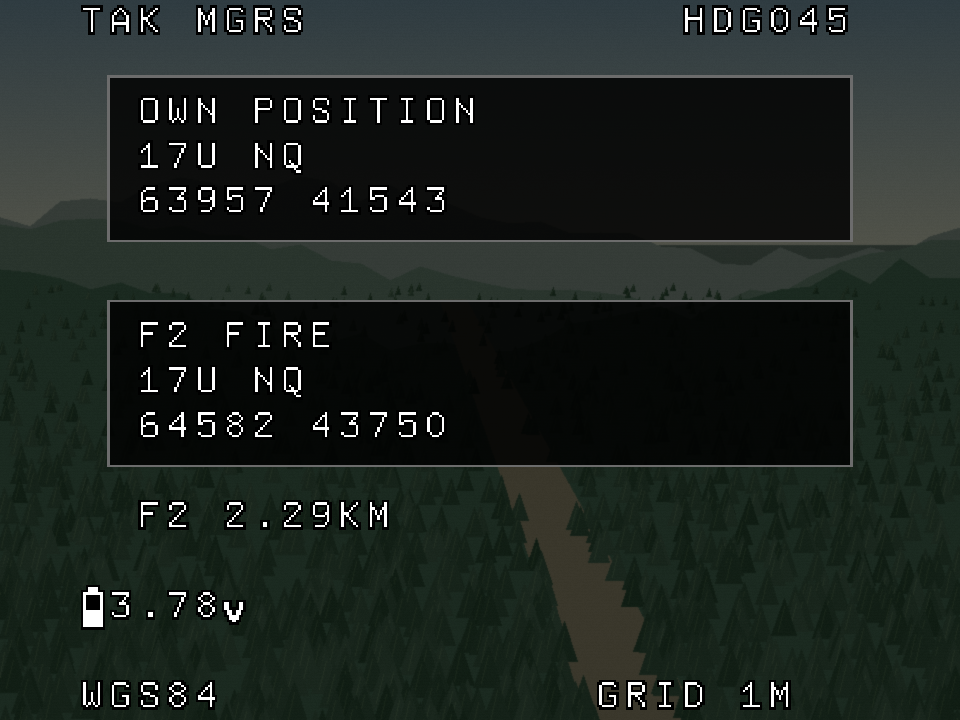

Authored report · Source / retained evidence in private GitHub repository ↗
MGRS coordinate card — 2026-11-03
P09 provides a readable grid reference for radio coordination: own position and the selected fire marker, each with its own complete MGRS reference. Select MGRS readout in the TAK preview. This is an offline design reference; its coordinates are synthetic and its conversion runs during fixture preparation.

| Readout | Full synthetic MGRS reference |
|---|---|
| Own position | 17U NQ 63957 41543 |
| Selected F2 fire marker | 17U NQ 64582 43750 |
Each block shows the zone/band and 100 km square on one line, then grouped easting and
northing on the next. Keep leading zeros and display the full prefix for each location;
a marker may be in a different square or zone. The footer shows WGS84 and GRID 1M.
Five digits per axis represent a 1 m grid cell; this does not establish 1 m GPS or
marker accuracy. See the primary GeographicLib format documentation.
Average cell voltage remains at the existing column 1, row 13. Other legacy FC telemetry is cleared. The detail card has no moving flight/drop cue, ownship arrow or range rings; the God's-eye and radar pages provide those spatial relationships. A dimmed mock landscape can remain behind the card. It is not registered terrain.
Own position assumes fresh usable aircraft navigation, independent of the TAK feed.
When Marker feed usable is unchecked, the F2 grid and distance are removed and its
block shows TAK STALE. Do not leave expired marker coordinates available for readback.
Actual ownship-fix loss must also clear its coordinates in the eventual implementation.
Fixture provenance
mgrs-fixture.json records full WGS84 inputs, formatted output,
converter version and inverse-check results. Ownship uses the flight reference's
synthetic latitude/longitude, 49.1234, -80.1234. F2 is derived from the existing
2200 m north / 650 m east marker fixture: a WGS84 geodesic with bearing
atan2(east, north) and distance hypot(north, east), approximately 2.29 km.
Heading changes rotate the plot; they do not change these absolute coordinates.
Fixture preparation used pyproj 3.6.1 WGS84 geodesics and
mgrs 1.5.0, calling
MGRS().toMGRS(latitude, longitude, MGRSPrecision=5). The library truncates grid references.
An inverse MGRS conversion and independent pyproj UTM projection place both source
positions inside their reported 1 m cells. Frozen outputs let the ordinary image
generator remain independent of those conversion packages.
Development work
Prefer a verified conversion on the FC/companion/TAK bridge, sending a bounded coordinate record to the OSD. No terrain grid or regional map is needed. Retain full WGS84 coordinates and source identity/age upstream; a formatted string is a display product, not a replacement for navigation state. Validate strings and lengths before drawing.
Before device use, verify the chosen converter against authoritative test vectors at zone/square boundaries, hemisphere changes, the antimeridian and supported polar regions. Test invalid fixes, leading zeros, marker expiry and selected-marker changes. Consider operator-selectable 10 m / 100 m display resolution by truncation, with the resolution always explicit. A smaller grid cell must not imply more trustworthy position data.
The current three-position AUX concept remains Normal / God's eye / Radar. The MGRS card is a separate detail-preview control; its eventual button/AUX mapping is undecided. Rendering, live conversion/data transport, navigation validity and PCB acceptance remain roadmap work.